International Journal on Computer Vision, Machine Learning, and Data Mining (CVMLDM)

Volume 1 - Year 2015 - Pages 1-10
DOI: TBD
Identification of Butterfly Species with Rough Set Approach Based on Textural Features
Kaya Yılmaz*1, Kayci Lokman2, Ertuğrul Ömer Faruk3, Tekin Ramazan4
1Department of Computer Engineering, Siirt University, 56100 Siirt, Turkey
yilmazkaya1977@gmail.com
2Department of Biology, Siirt University, 56100 Siirt, Turkey
3Department of Electrical and Electronics Engineering, Batman University, 72060 Batman, Turkey
4Department of Computer Engineering, Batman University, 72060 Batman, Turkey
Abstract - Butterflies can be classified according to their outer morphological qualities if it is possible, but sometimes it is required to analyze their genital characters by using various chemical substances and methods which can only be carried out with some certain expenses. Furthermore, preparation of genital slides is time-consuming since it requires specific processes. Developments in artificial intelligence and image processing techniques have facilitated the application of new identification methods based on digital images. Therefore, in this study, a new approach based on Rough Set (RS) and the gray level co-occurrence matrix (GLCM) techniques was used for identification of butterfly species as an alternative to conventional diagnostic methods. 190 butterfly images, belonging to 19 different species in Pieridae family, were used. The obtained identification accuracy of the GLCM+RS method was 89.47%. The methodology presented herein effectively detects and classified these butterflies. These findings suggest that the texture features can be useful in identification of butterfly species.
Keywords: Butterfly Identification; Gray Level Co-Occurrence Matrix; Rough Set; Texture Analysis.
© Copyright 2015 Authors - This is an Open Access article published under the Creative Commons Attribution License terms. Unrestricted use, distribution, and reproduction in any medium are permitted, provided the original work is properly cited.
Date Received: 2014-23-11
Date Accepted: 2015-01-06
Date Published: 2015-01-12
1. Introduction
Butterflies are members of the Lepidoptera (butterflies and moths) orders, which are one of the richest groups among insects with its more than 170.000 species. Identification of butterfly species can generally be done by examining the shape, color of wings and the figures or textures on the wings [1]. On the other hand, for some cases the identification can be only done by some complex and complicated processes, such as: examination of outer structural features of genitals organ, especially of the male individual [2], or the molecular level studies [3]. A number of attempts have been made to develop computer tools to help in identification of butterfly, moth, and pest species. Wang et al. developed a content-based image retrieval system, which was based on analyzing surface texture, color and shape features of butterfly images [4]. Qing et al. developed an automatic identification system for four rice pest species based on color, shape, and texture features of SVM classifier [5]. Wen et al. tried to classify orchard insects based on local features through different six classifier algorithms [6]. Bechar et al. developed on-line recognition and counting system for vegetable pests for early detection of prominent pest attacks in green-house crops [7]. Additionally, Kaya et al. demonstrated butterfly species identification approaches by machine learning and image processing techniques [8-11]. In their study, they extracted features by the energy spatial Gabor filtered [8], grey-level co-occurrence matrix (GLCM) [9, 10] and local binary pattern [11] and classification was carried out by various classification methods.
The aim of this study is to design a computer vision system, which is a cheaper and quicker way for determining butterfly species correctly, based on textures, from the surface of the images [12]. Texture analyzes (TA) of biological images is done by computer-based techniques, in which the features are extracted from a distribution gray level of pixels of images with mathematical approaches. A number of techniques have been used in TA [13, 14, 15, 16] and gray level co-occurrence matrix (GLCM) is one of the most popular ones. The visual characteristics and statistical properties of images can be obtained through GLCM by calculation of the relationship between the reference pixel and the neighboring pixels [17].
The study is formed in two stages; in the first stage, Heralick [13] textural features were obtained from butterfly images, in the other stage, the classification process with RS (Rough Set) was done by using these features. The RS is a mathematical approach used for different purposes such as: feature selection, generating decision-making rules or classification [18, 19]. 190 butterfly images of 19 species belonging to the Pieridae family were used to evaluate and validate the proposed computer vision system. As a result of this study, identification of butterfly species by using texture features was showed a significant success. We think that such automatic systems have the opportunity to work with other butterfly families the requirement of expert information will be less for identification butterfly species.
The rest of the paper is organized as follows. The material used in this study is explained in the next section. In Section 3, the process of feature extraction (GLCM), RS approach, and the proposed model were explained. Results are given in Section 4 while Section 5 concludes the paper.
2. Material
The butterflies were collected in Van (Turkey) between May, 2002 and August 2003, by the second author between the attitudes of 1800-3200 meters. The butterflies were caught using a net trap in the field and killed in jars containing ethyl acetate. Then, the butterflies were put into special envelopes prepared in advance, together with labels including their collection information and the samples in the temporary storage boxes were put in softening containers. After softening for 2-3 days and they were pinned with standard insect pins of the appropriate number, stretched on stretching boards and dried. By a drying oven fixed at 50-55 oC in 1 week. Additionally, identification of butterflies was made by the comparison of the genital structures of related literature by various handbooks, revision and comparison studies [20, 21, 22, 23]. The images were shot by a Cannon Eos 60D professional camera. Butterfly species used in this study belong to the Pieridae family, which is spread throughout the Van Lake basin, and they are shown in Figure 1.
3. Method
3.1. Image Texture Extraction Approach
In this study, we used GLCM to extract texture features from butterfly species. The GLCM is a pixel-based image processing method and the creation of GLCM matrix is based on the distance between pixels (d), the pixels angle (0º, 45º, 90º and 135º) and the number of level gray scale conversion done (maximum 256) parameters [17]. The GLCM can be expressed in Equation 1 depending on angle and distance parameters [13, 24, 25].
After the GLCM matrix is calculated, then the next step is to calculate the textural features from it. Generally, 14 different textural features obtain from butterfly images, which are:
Table 1. The textural features used in this study.
| Feature Code | Feature | Formula | |
| f1 | Contrast | 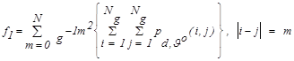 | (2) |
| f2 | Correlation | 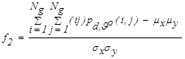 | (3) |
| f3 | Variance | 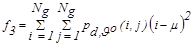 | (4) |
| f4 | Homogeneity | 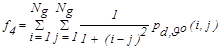 | (5) |
| f5 | Sum average | 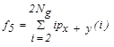 | (6) |
| f6 | Sum entropy | 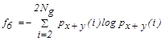 | (7) |
| f7 | Sum variance | 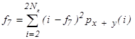 | (8) |
| f8 | Entropy | 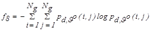 | (9) |
| f9 | Difference variance | 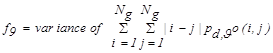 | (10) |
| f10 | Difference entropy | 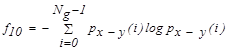 | (11) |
| f11 | Energy | 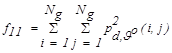 | (12) |
| f12 | Information Measures of Correlation 1 | 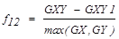 | (13) |
| f13 | Information Measures of Correlation 2 | 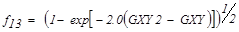 | (14) |
| f14 | Maximal Correlation Coefficient | 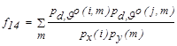 | (15) |
where,
3.2. The Rough Set Theory
RS approach provides significant advantages such as to determine dependencies between features, feature reduction, generating rules and classifying. Some basic definitions in RS theory are given as follows.
3.2.1. Information System
In rough sets (RS), information system is defined as 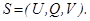. Where 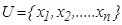 shows a finite non-empty set (population), here it is butterfly dataset. 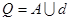 shows the finite non-empty feature set and A shows the condition feature set belonging to butterflies. Condition features set are those obtained from GLCM showed in Table 1 and a feature vector in the form of A = {a1, a2,…an}. On the other hand, d is a decisive feature identifying butterflies classes. Information system consists of a combination of condition and decision features. 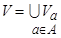 is a value set related to feature a [26].
3.2.2. Indiscernibility Relation
Since a dataset (butterfly dataset) is oversized and values obtained are alike or similar, then the data cannot be distinguished. In this case, with 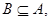 indiscernibility relation to B feature is as IND(B) [27, 28];
where, IND(B) is B-indiscernibility relation. If x1 and x2 refer IND(B), x1 and x2 cannot be distinguished by B feature set. Value set (U=population) can be divided into some equivalence classes according to B-indiscernibility relation in form the of U/IND(B). These equivalence classes are shown as [x]IND(B). All the equivalences of IND(B) forms the basic set of B. Equivalence classes according to the decision-making feature of the universe form the value classes of the decision-making feature.
3.2.3. Set Approximations
The main purpose in RS is to form approximations
by using IND(B) a binary relation.  is definitely the union of the sets related to X
using B-indiscernibility relation of X and is shown as
follows [29]:
is definitely the union of the sets related to X
using B-indiscernibility relation of X and is shown as
follows [29]:
Moreover, upper approximation can be shown as
Lower and upper approximations refers split the population into three regions as POS (X) positive region, NEG(X) negative region and BND(X) bound region. Sets belonging to these regions are computed as [29];
3.2.4. Feature Reduction and Core Features
Feature reduction is defined as a process of selecting relevant features from the feature set in order to explain the information system (butterfly species) through a minimum feature number. Including 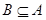 , if POS(B)=POS(A), information system can be explained with B that is formed with less number of features. Moreover, an information system may have more than one reduced dataset. The dataset obtained from the intersection of reduced sets acquired by an information system is a core feature set of that A feature set [29].
3.2.5. Decision Rules
One of the most important reasons for applying rough sets is its ability of generation of decision rules. When butterfly information system is given, rough sets can generate decision rules for a given training set of known butterflies and predict classes to which new butterflies belong. The expression condA = v, where A is a texture feature and v is value of feature, called the descriptor. Then, it is easy to generate the rules as a form of IF α THEN β, where α denotes a union of descriptors that only include features and β denotes a descriptor decD = v, where D is a decisive feature and v is allowed decision value or butterfly species [30].
3.3. Proposed Method for Butterfly Identification
In this study, a method based on GLCM and RS methods is used for the identification of butterfly species. The block diagram pertaining to the model used in this study is shown in the Figure 2.
The study consists of five blocks as seen in Figure 2. The processes in these blocks can be summarized briefly as follows. In this study, 14 texture features of images are extracted. Each texture feature (Table 1) that is established from butterfly images. Decision rules are derived from 114 (60%) examples of 190 instances. The remaining 76 (40%) samples were used to test the model developed by the RS.
Block 1: The dataset contained 190 images, which were cropped in 512 × 512 pixels, belonging to 19 butterfly species.
Block 2: Extracting textural features from butterfly images by GLCM which is calculated for different angles (0◦, 45◦, 90◦, and 135◦) and distance (d=1).
Block 3: Obtaining statistical measurements listed in Table 1 from co-occurrence matrixes.
Block 4: Reducing the non-relevant features by feature selection.
Block 5: Creating decision rules and classifying butterflies by them.
4. Results and Discussion
The aim of the study was to obtain an accurate identification approach for butterfly species through their texture features. We used 19 different butterfly species of the Pieridae family, extracted 14 textures features (see in Table 1) and classified by RS. The textures of biological images by different butterfly species may vary from each other. In a butterfly image, different wing shapes, structures and tissues always have significantly different textures, which may vary from each other depending on their species. A sample of textures belonging to different butterfly species in our study is in Figure 3.
In this experimental study, texture features extracted for different angles are 0◦, 45◦, 90◦, and 135◦ and distance d=1. The 60% (114) of 190 butterfly images were used for decision rules database and the remaining 40% (76) images were used to test the model developed by the RS. The confusion matrixes for RS with different GLCM parameters are given in Tables 2, 3, 4 and 5.
Table 2. Confusion matrix for φ=0, d=1 parameters.
| Butterfly Specie | BS1 | BS2 | BS3 | BS4 | BS5 | BS6 | BS7 | BS8 | BS9 | BS10 | BS11 | BS12 | BS13 | BS14 | BS15 | BS16 | BS17 | BS18 | BS19 |
| BS1 | 2 | 0 | 0 | 0 | 0 | 0 | 0 | 0 | 0 | 0 | 0 | 0 | 0 | 1 | 0 | 1 | 0 | 0 | 0 |
| BS2 | 0 | 4 | 0 | 0 | 0 | 0 | 0 | 0 | 0 | 0 | 0 | 0 | 0 | 0 | 0 | 0 | 0 | 0 | 0 |
| BS3 | 0 | 1 | 3 | 0 | 0 | 0 | 0 | 0 | 0 | 0 | 0 | 0 | 0 | 0 | 0 | 0 | 0 | 0 | 0 |
| BS4 | 0 | 0 | 0 | 4 | 0 | 0 | 0 | 0 | 0 | 0 | 0 | 0 | 0 | 0 | 0 | 0 | 0 | 0 | 0 |
| BS5 | 0 | 0 | 0 | 0 | 4 | 0 | 0 | 0 | 0 | 0 | 0 | 0 | 0 | 0 | 0 | 0 | 0 | 0 | 0 |
| BS6 | 0 | 0 | 0 | 0 | 0 | 4 | 0 | 0 | 0 | 0 | 0 | 0 | 0 | 0 | 0 | 0 | 0 | 0 | 0 |
| BS7 | 0 | 0 | 1 | 0 | 0 | 0 | 2 | 0 | 1 | 0 | 0 | 0 | 0 | 0 | 0 | 0 | 0 | 0 | 0 |
| BS8 | 0 | 0 | 0 | 0 | 0 | 0 | 0 | 4 | 0 | 0 | 0 | 0 | 0 | 0 | 0 | 0 | 0 | 0 | 0 |
| BS9 | 0 | 0 | 0 | 0 | 0 | 0 | 0 | 1 | 2 | 1 | 0 | 0 | 0 | 0 | 0 | 0 | 0 | 0 | 0 |
| BS10 | 0 | 0 | 0 | 0 | 0 | 0 | 0 | 0 | 2 | 2 | 0 | 0 | 0 | 0 | 0 | 0 | 0 | 0 | 0 |
| BS11 | 0 | 0 | 0 | 0 | 0 | 0 | 0 | 0 | 0 | 0 | 4 | 0 | 0 | 0 | 0 | 0 | 0 | 0 | 0 |
| BS12 | 0 | 0 | 0 | 0 | 0 | 0 | 0 | 0 | 0 | 0 | 0 | 2 | 0 | 0 | 2 | 0 | 0 | 0 | 0 |
| BS13 | 0 | 0 | 0 | 0 | 0 | 0 | 0 | 0 | 0 | 0 | 0 | 0 | 4 | 0 | 0 | 0 | 0 | 0 | 0 |
| BS14 | 0 | 0 | 0 | 0 | 0 | 0 | 0 | 0 | 0 | 0 | 0 | 0 | 0 | 4 | 0 | 0 | 0 | 0 | 0 |
| BS15 | 0 | 0 | 0 | 0 | 0 | 0 | 0 | 0 | 0 | 0 | 0 | 0 | 0 | 0 | 4 | 0 | 0 | 0 | 0 |
| BS16 | 0 | 0 | 0 | 0 | 0 | 0 | 0 | 0 | 0 | 0 | 0 | 0 | 0 | 0 | 0 | 4 | 0 | 0 | 0 |
| BS17 | 0 | 0 | 0 | 0 | 0 | 0 | 0 | 0 | 0 | 0 | 0 | 0 | 0 | 0 | 0 | 0 | 4 | 0 | 0 |
| BS18 | 0 | 0 | 0 | 0 | 0 | 0 | 0 | 0 | 0 | 0 | 0 | 0 | 0 | 0 | 0 | 0 | 0 | 4 | 0 |
| BS19 | 0 | 0 | 0 | 0 | 0 | 0 | 0 | 0 | 0 | 0 | 0 | 0 | 0 | 0 | 0 | 0 | 0 | 1 | 3 |
Table 3. Consusion matrix for φ=45, d=1 parameters.
| Butterfly Specie | BS1 | BS2 | BS3 | BS4 | BS5 | BS6 | BS7 | BS8 | BS9 | BS10 | BS11 | BS12 | BS13 | BS14 | BS15 | BS16 | BS17 | BS18 | BS19 |
| BS1 | 3 | 0 | 0 | 0 | 0 | 0 | 0 | 0 | 0 | 0 | 0 | 0 | 0 | 0 | 0 | 0 | 0 | 1 | 0 |
| BS2 | 0 | 4 | 0 | 0 | 0 | 0 | 0 | 0 | 0 | 0 | 0 | 0 | 0 | 0 | 0 | 0 | 0 | 0 | 0 |
| BS3 | 0 | 0 | 3 | 0 | 0 | 0 | 0 | 0 | 0 | 0 | 0 | 0 | 0 | 0 | 0 | 1 | 0 | 0 | 0 |
| BS4 | 0 | 0 | 0 | 4 | 0 | 0 | 0 | 0 | 0 | 0 | 0 | 0 | 0 | 0 | 0 | 0 | 0 | 0 | 0 |
| BS5 | 0 | 0 | 0 | 0 | 4 | 0 | 0 | 0 | 0 | 0 | 0 | 0 | 0 | 0 | 0 | 0 | 0 | 0 | 0 |
| BS6 | 0 | 0 | 0 | 0 | 0 | 4 | 0 | 0 | 0 | 0 | 0 | 0 | 0 | 0 | 0 | 0 | 0 | 0 | 0 |
| BS7 | 0 | 0 | 1 | 0 | 0 | 1 | 2 | 0 | 0 | 0 | 0 | 0 | 0 | 0 | 0 | 0 | 0 | 0 | 0 |
| BS8 | 0 | 0 | 0 | 0 | 0 | 0 | 0 | 4 | 0 | 0 | 0 | 0 | 0 | 0 | 0 | 0 | 0 | 0 | 0 |
| BS9 | 0 | 0 | 0 | 0 | 0 | 0 | 0 | 0 | 2 | 0 | 0 | 2 | 0 | 0 | 0 | 0 | 0 | 0 | 0 |
| BS10 | 0 | 0 | 0 | 0 | 0 | 0 | 0 | 0 | 0 | 4 | 0 | 0 | 0 | 0 | 0 | 0 | 0 | 0 | 0 |
| BS11 | 0 | 0 | 0 | 0 | 0 | 0 | 0 | 0 | 0 | 0 | 4 | 0 | 0 | 0 | 0 | 0 | 0 | 0 | 0 |
| BS12 | 0 | 0 | 0 | 0 | 0 | 0 | 0 | 0 | 0 | 0 | 0 | 2 | 0 | 0 | 2 | 0 | 0 | 0 | 0 |
| BS13 | 0 | 0 | 0 | 0 | 0 | 0 | 0 | 0 | 0 | 0 | 0 | 0 | 4 | 0 | 0 | 0 | 0 | 0 | 0 |
| BS14 | 0 | 0 | 0 | 0 | 0 | 0 | 0 | 0 | 0 | 0 | 0 | 0 | 0 | 4 | 0 | 0 | 0 | 0 | 0 |
| BS15 | 0 | 0 | 0 | 0 | 0 | 0 | 0 | 0 | 0 | 0 | 0 | 0 | 0 | 0 | 4 | 0 | 0 | 0 | 0 |
| BS16 | 0 | 0 | 0 | 0 | 0 | 0 | 0 | 0 | 0 | 0 | 0 | 0 | 0 | 0 | 0 | 4 | 0 | 0 | 0 |
| BS17 | 0 | 0 | 0 | 0 | 0 | 0 | 0 | 0 | 0 | 0 | 0 | 0 | 0 | 0 | 0 | 0 | 4 | 0 | 0 |
| BS18 | 0 | 0 | 0 | 0 | 0 | 0 | 0 | 0 | 0 | 0 | 0 | 0 | 0 | 0 | 0 | 0 | 0 | 4 | 0 |
| BS19 | 0 | 0 | 0 | 0 | 0 | 0 | 0 | 0 | 0 | 0 | 0 | 0 | 0 | 0 | 0 | 0 | 0 | 0 | 4 |
Table 4. Confusion matrix for φ=90, d=1 parameters.
| Butterfly Specie | BS1 | BS2 | BS3 | BS4 | BS5 | BS6 | BS7 | BS8 | BS9 | BS10 | BS11 | BS12 | BS13 | BS14 | BS15 | BS16 | BS17 | BS18 | BS19 |
| BS1 | 3 | 0 | 0 | 0 | 0 | 0 | 0 | 0 | 0 | 0 | 0 | 0 | 0 | 0 | 0 | 0 | 0 | 1 | 0 |
| BS2 | 0 | 4 | 0 | 0 | 0 | 0 | 0 | 0 | 0 | 0 | 0 | 0 | 0 | 0 | 0 | 0 | 0 | 0 | 0 |
| BS3 | 0 | 0 | 2 | 0 | 0 | 0 | 0 | 0 | 0 | 0 | 0 | 0 | 0 | 0 | 0 | 2 | 0 | 0 | 0 |
| BS4 | 0 | 0 | 0 | 4 | 0 | 0 | 0 | 0 | 0 | 0 | 0 | 0 | 0 | 0 | 0 | 0 | 0 | 0 | 0 |
| BS5 | 0 | 0 | 0 | 0 | 2 | 0 | 0 | 0 | 0 | 0 | 0 | 0 | 2 | 0 | 0 | 0 | 0 | 0 | 0 |
| BS6 | 0 | 0 | 0 | 0 | 0 | 4 | 0 | 0 | 0 | 0 | 0 | 0 | 0 | 0 | 0 | 0 | 0 | 0 | 0 |
| BS7 | 0 | 0 | 0 | 0 | 0 | 0 | 2 | 0 | 1 | 0 | 1 | 0 | 0 | 0 | 0 | 0 | 0 | 0 | 0 |
| BS8 | 0 | 0 | 0 | 0 | 0 | 0 | 0 | 4 | 0 | 0 | 0 | 0 | 0 | 0 | 0 | 0 | 0 | 0 | 0 |
| BS9 | 0 | 0 | 0 | 0 | 0 | 0 | 0 | 1 | 2 | 1 | 0 | 0 | 0 | 0 | 0 | 0 | 0 | 0 | 0 |
| BS10 | 0 | 0 | 0 | 0 | 0 | 0 | 0 | 0 | 1 | 3 | 0 | 0 | 0 | 0 | 0 | 0 | 0 | 0 | 0 |
| BS11 | 0 | 0 | 0 | 0 | 0 | 0 | 0 | 0 | 0 | 0 | 2 | 0 | 0 | 0 | 0 | 1 | 1 | 0 | 0 |
| BS12 | 0 | 0 | 0 | 0 | 0 | 0 | 0 | 0 | 0 | 0 | 0 | 4 | 0 | 0 | 0 | 0 | 0 | 0 | 0 |
| BS13 | 0 | 0 | 0 | 0 | 0 | 0 | 0 | 0 | 0 | 0 | 0 | 0 | 4 | 0 | 0 | 0 | 0 | 0 | 0 |
| BS14 | 0 | 1 | 0 | 0 | 0 | 0 | 0 | 0 | 0 | 0 | 0 | 0 | 0 | 3 | 0 | 0 | 0 | 0 | 0 |
| BS15 | 0 | 0 | 0 | 0 | 0 | 0 | 0 | 0 | 0 | 0 | 0 | 0 | 0 | 0 | 4 | 0 | 0 | 0 | 0 |
| BS16 | 1 | 0 | 0 | 0 | 0 | 0 | 0 | 0 | 0 | 0 | 0 | 0 | 0 | 0 | 0 | 3 | 0 | 0 | 0 |
| BS17 | 0 | 0 | 0 | 0 | 0 | 0 | 0 | 0 | 0 | 0 | 0 | 0 | 0 | 0 | 0 | 0 | 4 | 0 | 0 |
| BS18 | 0 | 0 | 0 | 0 | 0 | 0 | 0 | 0 | 0 | 0 | 0 | 0 | 1 | 0 | 0 | 0 | 0 | 3 | 0 |
| BS19 | 0 | 0 | 0 | 0 | 0 | 0 | 0 | 0 | 0 | 0 | 0 | 0 | 0 | 0 | 0 | 0 | 0 | 0 | 4 |
Table 5. Confusion matrix for φ=135, d=1 parameters.
| Butterfly Specie | BS1 | BS2 | BS3 | BS4 | BS5 | BS6 | BS7 | BS8 | BS9 | BS10 | BS11 | BS12 | BS13 | BS14 | BS15 | BS16 | BS17 | BS18 | BS19 |
| BS1 | 3 | 0 | 0 | 0 | 0 | 0 | 0 | 0 | 0 | 0 | 0 | 0 | 0 | 0 | 0 | 0 | 0 | 1 | 0 |
| BS2 | 0 | 4 | 0 | 0 | 0 | 0 | 0 | 0 | 0 | 0 | 0 | 0 | 0 | 0 | 0 | 0 | 0 | 0 | 0 |
| BS3 | 0 | 0 | 3 | 0 | 0 | 0 | 0 | 0 | 0 | 0 | 0 | 0 | 0 | 0 | 0 | 1 | 0 | 0 | 0 |
| BS4 | 0 | 0 | 0 | 4 | 0 | 0 | 0 | 0 | 0 | 0 | 0 | 0 | 0 | 0 | 0 | 0 | 0 | 0 | 0 |
| BS5 | 0 | 0 | 0 | 0 | 3 | 0 | 0 | 0 | 0 | 0 | 0 | 0 | 1 | 0 | 0 | 0 | 0 | 0 | 0 |
| BS6 | 0 | 0 | 0 | 0 | 0 | 4 | 0 | 0 | 0 | 0 | 0 | 0 | 0 | 0 | 0 | 0 | 0 | 0 | 0 |
| BS7 | 0 | 0 | 1 | 0 | 0 | 0 | 2 | 0 | 1 | 0 | 0 | 0 | 0 | 0 | 0 | 0 | 0 | 0 | 0 |
| BS8 | 0 | 0 | 0 | 0 | 0 | 0 | 0 | 4 | 0 | 0 | 0 | 0 | 0 | 0 | 0 | 0 | 0 | 0 | 0 |
| BS9 | 0 | 0 | 0 | 0 | 0 | 0 | 0 | 0 | 3 | 0 | 0 | 0 | 0 | 0 | 1 | 0 | 0 | 0 | 0 |
| BS10 | 0 | 0 | 0 | 0 | 0 | 0 | 0 | 0 | 0 | 3 | 0 | 1 | 0 | 0 | 0 | 0 | 0 | 0 | 0 |
| BS11 | 0 | 0 | 0 | 0 | 0 | 0 | 0 | 0 | 0 | 0 | 4 | 0 | 0 | 0 | 0 | 0 | 0 | 0 | 0 |
| BS12 | 0 | 0 | 0 | 0 | 0 | 0 | 0 | 0 | 0 | 0 | 0 | 3 | 0 | 0 | 1 | 0 | 0 | 0 | 0 |
| BS13 | 0 | 0 | 0 | 0 | 0 | 0 | 0 | 0 | 0 | 0 | 0 | 0 | 4 | 0 | 0 | 0 | 0 | 0 | 0 |
| BS14 | 0 | 0 | 0 | 0 | 0 | 0 | 0 | 0 | 0 | 0 | 0 | 0 | 0 | 4 | 0 | 0 | 0 | 0 | 0 |
| BS15 | 0 | 0 | 0 | 0 | 0 | 0 | 0 | 0 | 0 | 0 | 0 | 0 | 0 | 0 | 3 | 0 | 0 | 0 | 1 |
| BS16 | 1 | 0 | 0 | 0 | 0 | 0 | 0 | 0 | 0 | 0 | 0 | 0 | 0 | 0 | 0 | 3 | 0 | 0 | 0 |
| BS17 | 0 | 0 | 0 | 0 | 0 | 0 | 0 | 0 | 0 | 0 | 0 | 0 | 0 | 0 | 0 | 0 | 4 | 0 | 0 |
| BS18 | 0 | 0 | 0 | 0 | 0 | 0 | 0 | 0 | 0 | 0 | 0 | 0 | 0 | 0 | 0 | 0 | 0 | 4 | 0 |
| BS19 | 0 | 0 | 0 | 0 | 0 | 0 | 0 | 0 | 0 | 0 | 0 | 0 | 0 | 0 | 0 | 0 | 0 | 0 | 4 |
The mean accuracies of the confusion matrix seen in Table 2-5 are sorted in Table 6.
Table 6. Accuracies for different φ and d parameters.
| φ=0, d=1 | φ=45, d=1 | φ=90, d=1 | φ=135, d=1 |
| 4.21% | 89.47% | 82.89% | 86.84% |
The mean classification accuracies for different GLCM parameters are given in Table 6. When Table 6 examined the best accuracy was obtained with φ=45, d=1 GLCM parameters and its mean classification accuracy is 89.47%. According to the results, it is seen that texture features are important parameters in classification of butterflies. The five texture features, which are the contrast, correlation, variance, energy and entropy, were obtained as core features. The scatter plot in the Figures 4, 5 and 6 shows the relationship between core features, which are more effective features for classification of butterflies.
As seen in Figure 4-6, most butterflies could be classified basically with less number of features. For φ=45, d=1 GLCM parameters, RS was compared to Multilayer Perceptron (MLP), Support Vector Machine (SVM), Naive Bayes (NB) and Decision Rules (J48). The obtained mean classification accuracies are sorted in Table 7.
Table 7. Accuracies for different φ=45, d=1 parameters for different methods.
| Method | Accuracy |
| SVM | 80.26% |
| MLP | 81.57% |
| BayesNet | 65.78% |
| J48 | 73.68% |
| RS | 89.47% |
As it is obvious in Table 7, the highest classification accuracy was obtained through RS. The obtained mean accuracy is found acceptable, since it is a good alternative instead of time consuming and expensive experiments to identify butterfly species. Additionally, in traditional species identification approach, the butterfly must be caught and killed. Therefore, simply taking a photo of a butterfly for identification is a simple and more natural way of identifying its species. The authors strongly suggest that employing image processing with machine learning methods to identify species instead of conventional diagnostic methods. Since employing it requires less effort and attention than time consuming and attention-seeking conventional diagnostic methods [11].
5. Conclusion
Shapes of wings, textures and color of butterflies change with a great range. It is to such an extent that these characteristics play an important role in the distinction of species at first glance. While these kinds of features are seen as taxonomic characters as long as being limited for some species, sometimes the species are very similar, and then an examination of external genital organs of male individuals is necessary. In recent years, as a result of cariologic researches, it is understood that chromosome numbers and sizes of species are important in distinction of species in some Pieridae species. While using various techniques in butterfly species distinction, it is seen that computational methods, machine learning techniques, are used rarely. In this study GLCM, which is an image processing technique, and RS, which is a mathematical approach used for various purposes such as classification, feature selection, feature extraction, feature reduction and extraction of decision rules especially in the applications of pattern recognition, were used in the identification of butterfly species. Totally 190 images belonging to 19 butterfly species of the Pieridae family were used in the study. 14 texture features were extracted from the images and diagnostics were done with RS. Texture features were obtained for four different angles. The best classification accuracy of RS is 89.47% for φ=45, d=1 GLCM parameters. According to the results, it is seen that the textures of butterflies to acquire an important success in the identification of butterfly species.
References
[1] M. K. Koçak, “A Synonymical, and Distributional Checklist of the Papilionoidea and Hesperioidea of East Mediterranean Countries, including Turkey (Lepidoptera),” Priamus (Suppl.), vol. 25, no. 42 pp. 1-162, 2011. View Article
[2] L. Kayci, “Erek Dağı (Van) Papilionoidea ve Hesperioidea Ekolojisi ve Faunası Üzerine Araştırmalar (Lepidoptera),” Priamus Suppl., vol. 6, pp. 1-47, 2007.
[3] P. Hebert and R. Gregory, “The Promise of DNA Barcoding for Taxonomy,” Systematic Biology, vol. 54, no. 5, pp. 852-859, 2005. View Article
[4] J. Wang, L. Ji, A. Liang, and Y. Decheng, “The Identification of Butterfly Families Using Content-Based Image Retrieval,” Biosystem Eng., vol. 111, no. 1, pp. 24-32, Jan. 2012. View Article
[5] Y. Qing, L. Qing-Jie, D. Guang-Qiang, B-J Yang, H-M Chen, and T. Jian, “An Insect Imaging System to Automate Rice Light-Trap Pest Identification,” J. of Integrative Agriculture, vol. 11, no. 6, pp. 978-985, Jun 2012. View Article
[6] C. Wen, D.E. Guyer, and W. Li, “Local Feature-Based Identification and Classification for Orchard Insects,” Biosystems Eng, vol. 104, no. 3, pp. 299-307, Nov. 2009. View Article
[7] I. Bechar, S. Moisan, M. Thonnat, and F. Bremond, “On-line Video Recognition and Counting of Harmful Insects”. In 20th Int. Conf. on Pattern Recognition, Istanbul, Turkey, 2010, pp. 4068-4071. View Article
[8] Y. Kaya, L. Kayci, and R. Tekin, “A Computer Vision System for the Automatic Identification of Butterfly Species via Gabor-Filter-Based Texture Features and Extreme Learning Machine: GF+ELM,” TEM J., vol. 2, no. 1, pp. 13-20, 2013 View Article
[9] L. Kayci, and Y. Kaya, “A Vision System for Automatic Identification of Butterfly Species Using a Grey-Level Co-occurrence Matrix and Multinomial Logistic Regression,” Zoology in the Middle East, vol. 60, no. 1, pp. 57-64, Feb. 2014. View Article
[10] Y. Kaya and L. Kayci, “Application of Artificial Neural Network for Automatic Detection of Butterfly Species Using Color and Texture Features,” Visual Comput., vol 60, no. 1, pp. 57-64, Feb. 2014. View Article
[11] Y. Kaya, L. Kayci, r. Tekin, and ö. Ertuğrul, “Evaluation of Texture Features for Automatic Detecting Butterfly Species Using Extreme Learning Machine,” J. of Experimental & Theoretical Artificial Intell., vol. 26, no. 2, pp. 267-281, Jan. 2014. View Article
[12] J. Sklansky, “Image Segmentation and Feature Extraction,” IEEE Trans. on Syst., Man and Cybern., vol. 8, no. 4, pp. 237-247, Apr. 1978. View Article
[13] R.M. Haralick, K. Shanmugam, and J. Dinstein, “Textural Features for Image Classification,” IEEE Trans. Syst. Man Cybern, vol. 3, no. 6, pp. 610-621, Nov. 1973. View Article
[14] M. Galloway, “Texture Analysis Using Gray Level Run Lengths,” Comput Graph Image Process, vol. 4, no. 2, pp. 171-179, Jun. 1975. View Article
[15] L. Sukissian, S. Kollias, and Y. Boutalis, “Adaptive Classification of Textured Images Using Linear Prediction and Neural Networks,” Signal Process, vol. 36, no. 2, pp. 209-232, Mar. 1994. View Article
[16] J.M. Keller and S. Chen, “Texture Description and Segmentation through Fractal Geometry,” Comput Vision Graph Image Process, vol. 45, no. 2, pp. 150-166, Feb. 1989. View Article
[17] S.N. Ondimu and H. Murase, “Effect of Probability-Distance Based Markovian Texture Extraction on Discrimination in Biological Imaging,” Comput. and Electron. in Agriculture, vol. 63, no. 1, pp. 2–12, Aug. 2008. View Article
[18] Z. Pawlak, R. Grzymala, and W. Z. Slowinski, “Rough Sets,” Commun. of the ACM, vol. 38, no. 11, pp. 89-95, Nov. 1995. View Article
[19] M. Yumin, and W. R. Duoqian, “A Rough Set Approach to Feature Selection Based on Ant Colony Optimization,” Pattern Recognition Letters, vol. 31, no. 3, pp. 226-233, Feb. 2010. View Article
[20] F. Carbonell, “Contribution a la Connaissance du Genre Agrodiaetus Hübner (1822): Le Complexe Ultraspécifique d'A. Transcaspica Staudinger (1899) (Lepidoptera, Lycaenidae),” Linneana Belgica, vol. 14, pp. 89-116, 1993.
[21] F. Carbonell, “Contribution a la Connaissance du Genre Agrodiaetus Hübner (1822), Position Taxinomique d'Agrodiaetus Anticarmon Koçak, 1983 (Lepidoptera, Lycaenidae),” Linneana Belgica, vol. 16, pp. 263-265, 1998.
[22] P. Skala, “New Taxa of the Genus Hyponephele MUSCHAMP, 1915 from Iran and Turkey (Lepidoptera, Nymphalidae),” Linneana Belgica, vol. 19, pp. 41-50, 2003.
[23] T. Tolman, Butterflies of Britain and Europe, London, UK: Harper Collins Publishers, 1997. View Book
[24] G. Xian, “An Identification Method of Malignant and Benign Liver Tumors from Ultrasonography Based on GLCM Texture Features and Fuzzy SVM,” Expert Syst with Appli. vol. 37, no. 10, pp. 6737-6741, Oct. 2010. View Article
[25] H. Manish, J. Bharati, L. Jay, and F. J. MacGregor, “Image Texture Analysis: Methods and Comparisons,” Chemometrics and Intell. Laboratory Syst., vol. 72, no. 1, pp. 57-71, Jun. 2004. View Article
[26] W. Yu, D. Mingyue, Z. Chengping, and H. Ying, “Interactive Relevance Feedback Mechanism for Image Retrieval Using Rough Set,” Knowledge-Based Syst, vol. 19, no. 8, pp.696-703, Dec. 2006. View Article
[27] W. Toshiko, I. Hiroyuki, T. Masaki, M. Hiroshi, and W. Takashi, “A Study on Rough Set-Aided Feature Selection for Automatic Web-Page Classification,” Web Intell. and Agent Syst.: An Int. J., vol. 4, no. 4, pp. 431- 441, Dec. 2006. View Article
[28] B. Edita, S. Vladimir, and S. Biljana, “The Synthesis of the Rough Set Model for the Better Applicability of Sagittal Abdominal Diameter in Identifying High Risk Patients,” Comput. in Biology and Medicine, vol. 40, no. 9, pp. 786 - 790, Sep. 2010. View Article
[29] W. Jinn-Tsai and C. Yi-Shih, “Rough Set Approach for Accident Chains Exploration,” Accident Anal. and Prevention, vol. 39, no. 3, pp. 629-637, May 2007. View Article
[30] T. Frank and T. Hans, “The Application of Rough Sets Analysis in Activity-Based Modelling, Opportunities and Constraints,” Expert Syst. with Appl., vol. 27, no. 4, pp. 585-592, Nov. 2004. View Article